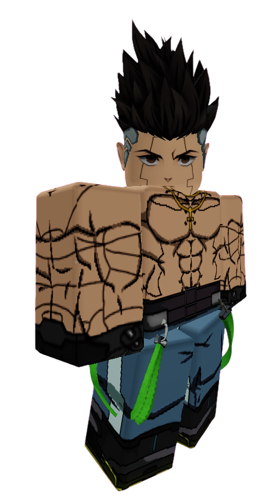

◆ EXIT TEAM FILE — VERIFIED ◆
DAVID MARTINEZ
Actor: loona09806
Team: TEAM 1
Status: SAFE
Archive Classification: EXIT TEAM MEMBER
Threat Level: MODERATE
HE WON'T BREAK
Quote
"You don't get to decide when I quit."
Short Bio
David Martinez is one of the youngest contestants in Anime Showdown Ultimax, but his determination has earned him the respect of nearly everyone on the island.
Unlike many contestants, David believes protecting others is always worth the risk. Whether facing impossible odds or overwhelming opponents, he refuses to abandon the people who rely on him.
Many contestants describe David as the emotional heart of Team 1.
The Archive describes him differently.
"The easiest heart to break."
How He Arrived
Before ASU
For the first time in a long while, David wasn't fighting.
Night City was quiet. The chaos had settled.
He had finally begun believing life could move forward.
Then... everything disappeared. The lights. The streets. The skyline. Even gravity itself seemed to stop.
Arrival
David awoke on an unfamiliar island surrounded by people he had never seen before. Instead of panicking, his first instinct was to check if everyone else was okay.
That decision would eventually lead him to Joker... and the Exit Team.
Personality
David is courageous, loyal, and incredibly selfless.
He often places other people's safety above his own, sometimes without realizing the danger he's putting himself in.
Despite everything he's endured, David still believes people deserve second chances.
That optimism has made him one of the most trusted contestants on the island... and one of the Host's favorite targets.
Current Story
David has become one of Team 1's emotional pillars.
Although Joker leads the Exit Team, David is often the one keeping everyone together whenever morale begins to fall.
While Joker creates the plans... Law perfects them... and Gyro inspires everyone...
David is the one willing to risk everything to make those plans succeed.
He has unknowingly become one of the greatest obstacles standing between the Host and complete control over the contestants.
Relationships
Allies
- Joker — Founder of the Exit Team and David's closest friend on the island.
- Gyro Zeppeli — Frequently reminds David that giving up is never an option.
- Trafalgar D. Water Law — David trusts Law's judgment, even when he doesn't fully understand the plan.
- Frieza — A temporary alliance built entirely on necessity. Neither fully trusts the other.
Rivals
- Adam Smasher — David despises Adam's willingness to work alongside the Host.
Enemies
- The Host — David refuses to believe anyone deserves absolute control over another person's life.
Threat Assessment
ARCHIVE CLASSIFICATION:
EXIT TEAM MEMBER
Lore
Unlike most contestants, David has become deeply involved in uncovering the truth behind Anime Showdown Ultimax.
Recovered Hotlogs place David at nearly every major Exit Team meeting.
Although he rarely creates the plans himself, he is almost always the first person willing to put himself in danger so someone else doesn't have to.
Internal Archive files suggest the Host has taken a particular interest in David's unwavering loyalty. One classified note simply reads:
"Break the heart... and the rest will follow."
The meaning of this message remains unknown.
Additional Notes
- Confirmed member of the Exit Team.
- Frequently volunteers for the most dangerous tasks.
- The Host has repeatedly attempted to isolate David from the rest of the Exit Team.
- Has never willingly abandoned another contestant.
- Considered one of the greatest obstacles to the Host's psychological manipulation.
- Security footage shows David helping eliminated contestants despite receiving nothing in return.
- Joker once described David as "the reason we're still fighting."
David... if you're reading this, don't trust the cameras. —J